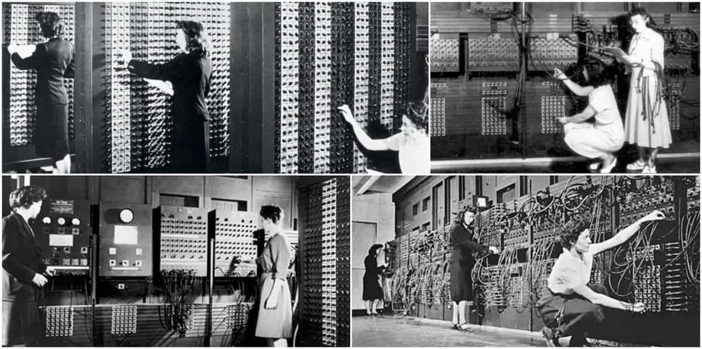
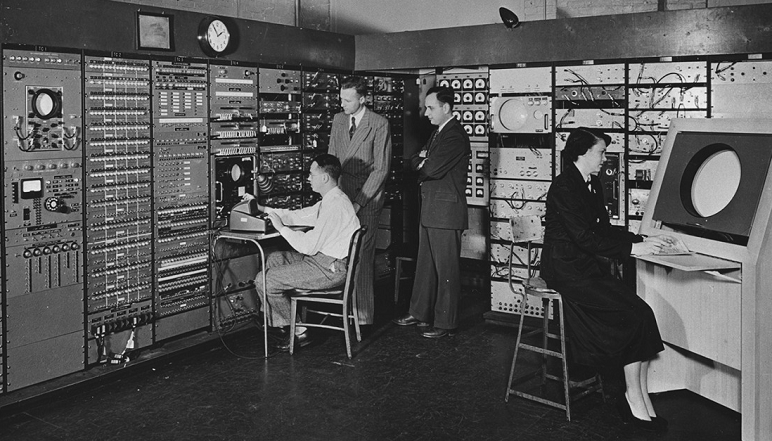
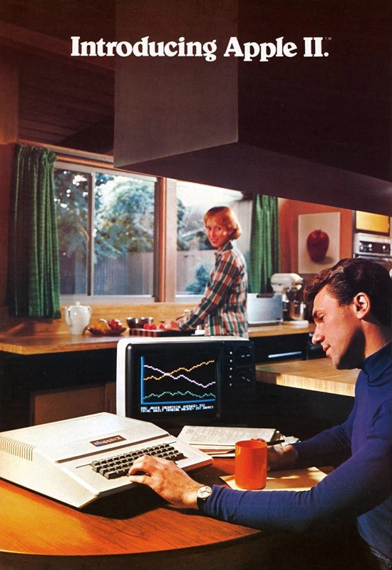
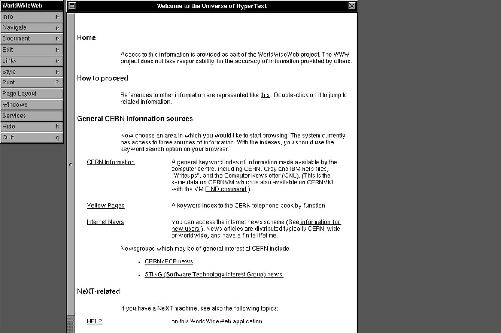

TECHNOLOGY MILESTONES

ENIAC (1946)
In 1942, physicist John Mauchly proposed an all-electronic calculating machine. He hoped to be able to assist the United States Military calculate complex wartime ballistics tables with his computer. As a result, John Mauchly and a team began work on a new creation unlike the computers seen before. The Electronic Numerical Integrator And Computer (ENIAC) was built between 1943 and 1945 and was the first large-scale computer to run at electronic speed without being slowed by any mechanical parts. From 1945 to 1955, The Electronic Numerical Integrator And Computer may have run more calculations than all of human history had done up to that point. This technology was state of the art at the time, and proved to be a breakthrough in electronic computers. This room-sized calculation computer eventually led to the development of personal computers as we know them today. In celebration of ENIAC’s 50th Anniversary (1996), the machine was reimplemented using modern integrated circuit technology. The once room-sized computer could now fit in the palm of your hand.
ENIAC Link

Direct Keyboard Input to Computers (1951)
In 1951, researchers at the Massachusetts Institute of Technology (MIT) began experimenting with directly importing to a computer through the use of a keyboard. This was a precursor to the modern day normal mode of computer operation. Typically, computer users of the time fed their programs into a computer using punched cards or paper tape. Doug Ross wrote a memo in support of direct computer access through a keyboard in February. Ross contended that a typewriter controlled electronically (a “Flexowriter”) could function as a keyboard input device when connected to an MIT computer due to its low cost and flexibility. An experiment conducted five months later on the MIT Whirlwind computer confirmed how useful and convenient a keyboard input device could be. This technological development was a breakthrough for computers and changed the way they would be viewed and operated forever. The days of time consuming punch cards are no more. The keyboard is here.
Keyboard Input Link

Apple I and II (1976-1977)
Steve Wozniak and Steve Jobs, computer pioneers, began selling their Apple I computer in kit form to computer retailers in 1976. Wozniak began designing an updated version, the Apple II, in August of that year. In December, Wozniak and Jobs presented a prototype. In 1977, Steve Wozniak designed the Apple II. The self-contained machine had circuitry, a keyboard, a power source, and permanent memory for the BASIC language. The display was a television. Thanks to the floppy disc drive and the spreadsheet application VisiCalc, it was a blockbuster. They eventually unveiled Apple II to the public in April 1977. In the late 1970s, the Apple II sparked a surge in personal computer sales, propelling Apple to the forefront of the industry. When it debuted in 1977, the Apple II was promoted as an extraordinary computer for ordinary people. The user-friendly design and graphical display made Apple a leader in the first decade of personal computing. Unlike the earlier Apple I, for which users had to supply essential parts such as a case and power supply, the Apple II was a fully realized consumer product. Design and marketing emphasized simplicity, an everyday tool for home, work, or school.
Apple I Link
Apple II Link

IBM's Personal Computer (1981)
On August 12, 1981, IBM introduced the IBM Personal Computer. This wasn't the first PC, but it did create the standards that in many ways have dominated personal computing for most of the past 40 years, including an open architecture, an Intel architecture processor, and a Microsoft operating system. Perhaps the most important decision IBM made about the PC was not producing it within its existing infrastructure but instead leaving it to a relatively small group of mavericks in Boca Raton, Florida. That project started as the outgrowth of a presentation that William C. "Bill" Lowe, laboratory director of IBM's Entry Level Systems (ELS) unit in Boca Raton, made before IBM's Corporate Management Committee, including IBM President John Opel and Chairman Frank Cary, in July 1980. By this point, there were a number of popular personal computers on the market, including the Apple II and a raft of machines running the CP/M operating system. These are the systems that paved the way for modern day computers.
IBM Personal Computer Link

The World Wide Web (1989)
Tim Berners-Lee, a British scientist, invented the World Wide Web (WWW) in 1989, while working at CERN. The Web was originally conceived and developed to meet the demand for automated information-sharing between scientists in universities and institutes around the world. CERN is not an isolated laboratory, but rather the focal point for an extensive community that includes more than 17,000 scientists from over 100 countries. Although they typically spend some time on the CERN site, the scientists usually work at universities and national laboratories in their home countries. Reliable communication tools are therefore essential.The basic idea of the WWW was to merge the evolving technologies of computers, data networks and hypertext into a powerful and easy to use global information system. This idea was revolutionary and unheard of until this point. It changed the face of computing forever. It’s what gives us the ability to create a website and view it in a browser today.
The World Wide Web Link